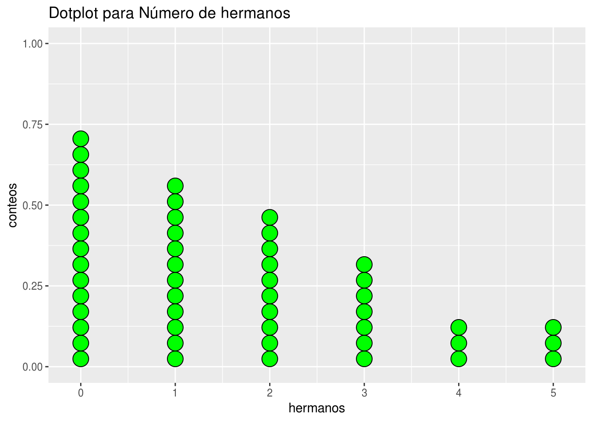
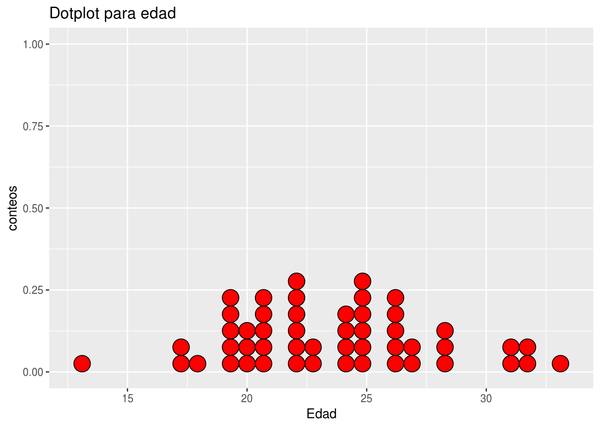
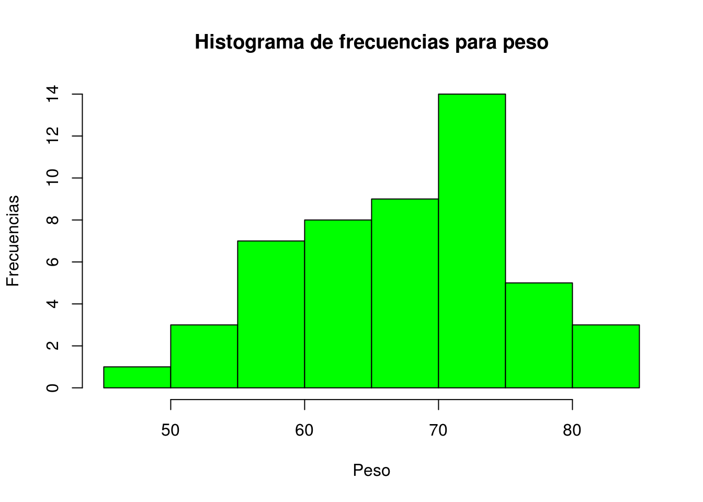
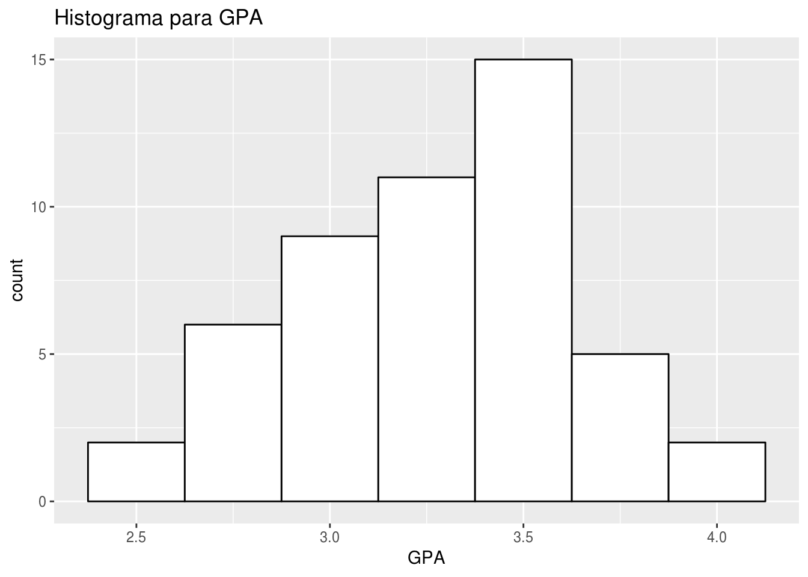
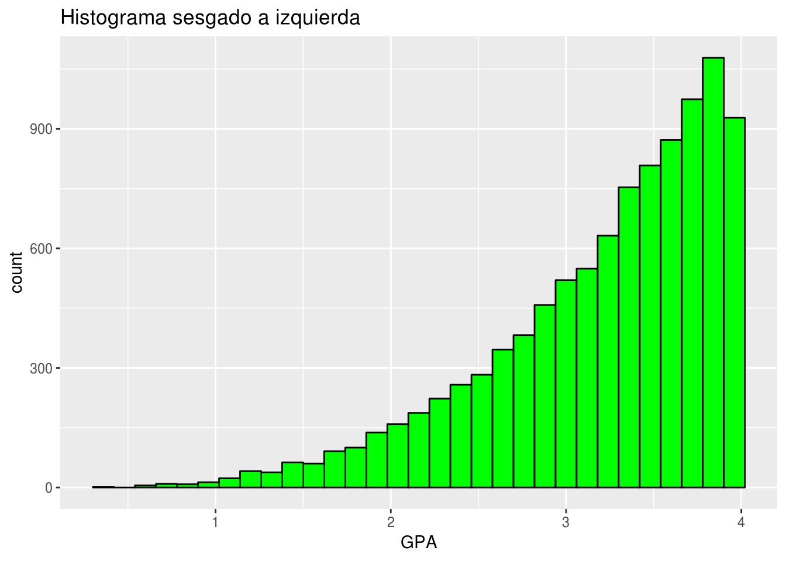
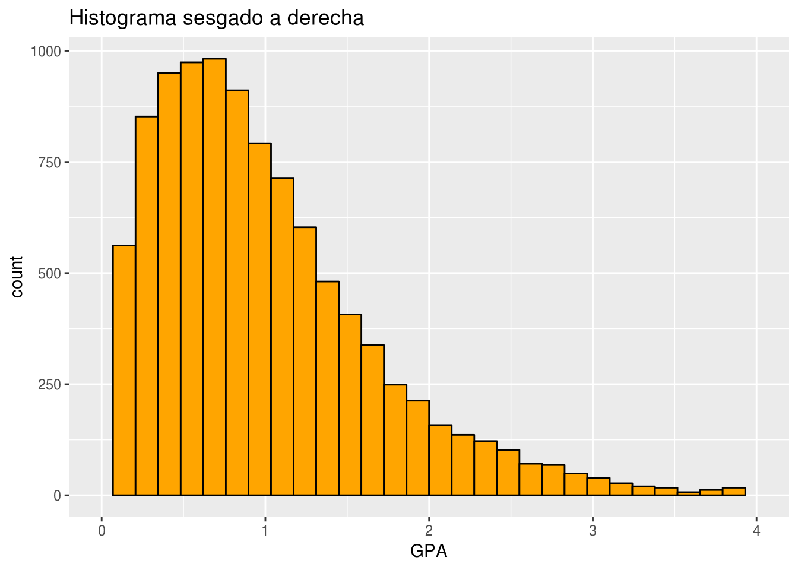

Estadística descriptiva
Estadística descriptiva
En este capítulo se verán las técnicas que se usan para la organización y presentación de datos en tablas y gráficas, así como el cálculo de medidas estadísticas de tendencia central y de dispersión. Se considerarán solamente datos univariados y bivariados.
Organización de datos Cuantitativos Discretos.
Tablas de Frecuencias:
Los datos cuantitativos discretos se organizan en tablas, llamadas Tablas de Distribución de frecuencias. Tipos de frecuencias:
Frecuencia absoluta: Indica el número de veces que se repite un valor de la variable.
Frecuencia relativa: Indica la proporción con que se repite un valor. Se obtiene dividiendo la frecuencia absoluta entre el tamaño de la muestra. Para una mejor interpretación es más conveniente multiplicarla por 100 para trabajar con una Frecuencia relativa porcentual.
Frecuencia absoluta acumulada: Indica el número de valores que son menores o iguales que el valor dado.
Frecuencia relativa acumulada: Indica el porcentaje de datos que son menores o iguales que el valor dado.
Ejemplo: Usaremos los datos de 50 estudiantes de cierta universidad. Los datos están formato plano txt, por tanto la forma de leerlos es la siguiente.
Estudiantes <- read.table("/datos/DirectorioR/figure_out/estudiantes.txt",header = T)
head(Estudiantes) peso estatura edad sexo hermanos tipo_sangre fuma num_cig h_internet
1 77.2 178.8 21 M 2 B si 0 13
2 74.6 158.6 21 M 0 A no 0 24
3 57.8 171.7 31 M 0 O si 1 33
4 65.6 170.1 32 F 1 B no 2 45
5 56.5 167.8 13 M 5 AB si 0 22
6 60.2 169.7 22 F 2 B si 3 36
gpa nota_esma area trabaja
1 3.52 I Oeste si
2 2.92 D Oeste no
3 3.32 F Norte si
4 3.17 C Otra si
5 4.20 B Sur si
6 2.99 D Oeste siVamos a construir una tabla de frecuencias paso a paso para la variable hermanos.
- Paso 1: Encontrar las frecuencias usando la función
table.
frecuencias <- table(Estudiantes$hermanos)
frecuencias
0 1 2 3 4 5
15 12 10 7 3 3 - Paso 2: Encontrar las frecuencia relativas dividiendo por el número de registros.
frec_relativa <- frecuencias/50
frec_relativa
0 1 2 3 4 5
0.30 0.24 0.20 0.14 0.06 0.06 - Paso 3: Encontrar las frecuencia absolutas acumuladas. Esto lo hace la función
cumsum()
frecuencias_acum <- cumsum(frecuencias)
frecuencias_acum 0 1 2 3 4 5
15 27 37 44 47 50 - Paso 4: Encontrar la frecuencia relativa acumulada. Esto se hace dividiendo por el numero de registros.
frecuencias_abs_acum <- frecuencias_acum/50
frecuencias_abs_acum 0 1 2 3 4 5
0.30 0.54 0.74 0.88 0.94 1.00 Mediante un data frame se puede crear la tabla de frecuencias
frec_relativa <- as.vector(frec_relativa)
frecuencias_acum <- as.vector(frecuencias_acum)
frecuencia_abs_acum <- as.vector(frecuencias_abs_acum)
table_frec <- data.frame(frecuencias,frec_relativa, frecuencias_acum, frecuencia_abs_acum)
table_frec Var1 Freq frec_relativa frecuencias_acum frecuencia_abs_acum
1 0 15 0.30 15 0.30
2 1 12 0.24 27 0.54
3 2 10 0.20 37 0.74
4 3 7 0.14 44 0.88
5 4 3 0.06 47 0.94
6 5 3 0.06 50 1.00Finalmente encontramos que la tabla de frecuencia para la variable número de hermanos es:
| hermanos | Frecuencia Abs | Frecuencia Relativa | Frecuencia Acumulada | Frecuancia Relativa Acumulada |
|---|---|---|---|---|
| 0 | 15 | 0.30 | 15 | 0.30 |
| 1 | 12 | 0.24 | 27 | 0.54 |
| 2 | 10 | 0.20 | 37 | 0.74 |
| 3 | 7 | 0.14 | 44 | 0.88 |
| 4 | 3 | 0.06 | 47 | 0.94 |
| 5 | 3 | 0.06 | 50 | 1.00 |
| Total | 50 | 1.00 |
Algunas interpretaciones para esta tabla son:
De las frecuencias absolutas se puede interpretar por ejemplo que hay 15 estudiantes que no tienen hermanos o que hay 10 que tienen 2 hermanos.
De la frecuencia relativa podemos decir que el 30 % de los estudiantes no tienen hermanos o que el 14 % de los estudiantes tienen tres hermanos.
De La frecuencia acumulada se puede decir por ejemplo que hay 44 estudiantes que tienen entre 0 y 3 hermanos o que hay 27 estudiantes que tienen menos de dos hermanos.
De la frecuencia relativa acumulada se puede concluir que el número de estudiantes con más de 3 hermanos es el 12 % o que el porcentaje de estudiantes que tienen hermanos es del 70 %.
El plot de puntos (“Dotplot”)
La gráfica más elemental es el plot de puntos (“Dotplot”) que consiste en colocar un punto cada vez que se repite un valor. Esta gráfica permite explorar la simetría y el grado de variabilidad de la distribución de los datos con respecto al centro, el grado de concentración o dispersión de los datos con respecto al valor central y permite detectar la presencia de valores anormales (“outliers”).
library(ggplot2)
ggplot(Estudiantes, aes(x = Estudiantes$hermanos)) + geom_dotplot(fill = "green", color = "black") +
ggtitle("Dotplot para Número de hermanos") + xlab("hermanos") + ylab("conteos")
En este caso no tenemos presencia de valores anormales (“outliers”).
A continuación hacemos un Dotplot para la variable cuantitativa - discreta edad para ilustrar la presencia de datos anormales.

Observamos que la edad de los estudiantes se situa entre los 17 y los 26 años aproximadamente, pero vemos la presencia de un dato a la izquierda de la gráfica y otros a la derecha muy alejados del grupo del centro, estos valores se conocen como datos anormales.
Organización de datos Cuantitativos Continuos.
Cuando los datos son de una variable continua o de una variable discreta que asume muchos valores distintos, ellos se agrupan en clases que son representadas por intervalos y luego se construye una tabla de frecuencias, cada frecuencia absoluta (relativa porcentual) representa el número (porcentaje) de datos que caen en cada intervalo.
Recomendaciones acerca del número de intervalos de clases:
- El número de intervalos de clases debe variar entre 5 y 12.
- Se debe evitar que hayan muchas clases con frecuencia baja o cero, de ocurrir ello es recomendable reducir el número de clases.
- A un mayor número de datos le corresponde un mayor número de clases.
Una regla bien usada es que el número de clases \(k\) debe ser aproximadamente igual a la raíz cuadrada del número de datos. También está la regla de Sturges, en donde el número de clases está dado por \[k = 1+3.3*log(n)\] Donde \(n\) es el número de datos. Una vez que se determina el número de clases se calcula la amplitud de cada clase usando la siguiente fórmula: \[Amplitud=\frac{máximo - mínimo}{k}\] Usualmente la amplitud debe ser redondeada al siguiente número.
También se debe tener encuenta la Marca de clase o Punto Medio, que se refiere a el punto medio de cada intervalo y es el valor que representa a todo el intervalo para el cálculo de algunos valores.
La siguiente función construye una tabla de frecuencias para variables continuas. Para usar esta función solo debe copiar el código y ejecutarlo en su consola de RStudio.
tabla_frecuencia <- function(datos) {
k <- nclass.Sturges(datos)
intervalos <- cut(datos, breaks = k)
tabla2 <- as.data.frame(table(intervalos))
tabla2 <- transform(tabla2, frec_relativa = prop.table(Freq),frec_acumu = cumsum(Freq))
tabla2 <- transform(tabla2, frecuencia_abs_acum = cumsum(frec_relativa))
midpoints <- function(x, dp=2){
lower <- as.numeric(gsub(',.*','',gsub('\\(|\\[|\\)|\\]','', x)))
upper <- as.numeric(gsub('.*,','',gsub('\\(|\\[|\\)|\\]','', x)))
return(round(lower+(upper-lower)/2, dp))
}
tabla2 <- transform(tabla2, MC = midpoints(intervalos))
tabla2
}Ejemplo para la variable peso
tabla_frecuencia(Estudiantes$peso) intervalos Freq frec_relativa frec_acumu frecuencia_abs_acum MC
1 (49.3,54.1] 2 0.04 2 0.04 51.70
2 (54.1,59] 9 0.18 11 0.22 56.55
3 (59,63.8] 6 0.12 17 0.34 61.40
4 (63.8,68.7] 9 0.18 26 0.52 66.25
5 (68.7,73.5] 12 0.24 38 0.76 71.10
6 (73.5,78.4] 7 0.14 45 0.90 75.95
7 (78.4,83.2] 5 0.10 50 1.00 80.80Con los resultados de la tabla de frecuencia y usando los puntos medios y las frecuencas absolutas podemos hacer un histograma para el peso de los estudiantes.
Ejemplo para la variable estatura
tabla_frecuencia(Estudiantes$estatura) intervalos Freq frec_relativa frec_acumu frecuencia_abs_acum MC
1 (153,157] 7 0.14 7 0.14 155.0
2 (157,161] 11 0.22 18 0.36 159.0
3 (161,166] 6 0.12 24 0.48 163.5
4 (166,170] 12 0.24 36 0.72 168.0
5 (170,174] 7 0.14 43 0.86 172.0
6 (174,179] 4 0.08 47 0.94 176.5
7 (179,183] 3 0.06 50 1.00 181.0Algunas interpretaciones de la tabla de frecuencia de estatura.
Hay 11 estudiantes con estatura entre 157 y 161 centimetros
El 24 % de los estudiantes tienen una estatura entre 166 y 170 centimetros.
Hay 43 estudianete con la estatura entre 153 y 174 centimetros.
El 72 % de los estudiantes tienene una estatura entre 153 y 170 centimetros.
Histograma
Es la gráfica de la tabla de distribución de frecuencias para datos agrupados, consiste de barras cuyas bases son los intervalos de clases y cuyas alturas son proporcionales a las frecuencias absolutas (o relativas) de los correspondientes intervalos.
Para hacer un Histograma en R puede usar la función hist() veamos,
hist(Estudiantes$peso)
Puede usar el paquete ggplot2 para hacer una grafica más atractiva.
ggplot(data=Estudiantes, aes(x = Estudiantes$peso)) +
geom_histogram(binwidth=6,col="black",fill="red") + ggtitle("Histograma para peso") + xlab("Peso")
Para la variable gpa
ggplot(data=Estudiantes, aes(x = Estudiantes$gpa)) +
geom_histogram(binwidth=0.2,col="orange",fill="black") + ggtitle("Histograma para GPA") + xlab("GPA")
Histogramas simétricos y sesgados.
Histograma sesgado a la Izquierda
Se refiere a un histograma sesgado a la izquierda cuando hay menos datos al lado izquierdo del histograma.

Histograma Simétrico
Un histograma es simétrico si hay aproximadamente la misma cantidad de datos al lado izquierdo y en el lado dereho.

Histograma sesgado a la Derecha
Se refiere a un histograma sesgadoa la derecha cuando hay menos datos al lado derecho del histograma.

Presentación de datos cualitativos
En este caso los datos también se pueden organizar en tablas de frecuencias, pero las frecuencias acumuladas no tienen mucho significado, excepto cuando la variable es ordinal
frecuencia_area <- table(Estudiantes$area)
frecuencia_area
Centro Este Norte Oeste Otra Sur
7 6 4 13 10 10 frecuencia_relativa_area <- frecuencia_area/50
frecuencia_relativa_area <- as.vector(frecuencia_relativa_area)
frecuencia_relativa_area [1] 0.14 0.12 0.08 0.26 0.20 0.20tabla_frecuencia <- data.frame(frecuencia_area,frecuencia_relativa_area)
tabla_frecuencia Var1 Freq frecuencia_relativa_area
1 Centro 7 0.14
2 Este 6 0.12
3 Norte 4 0.08
4 Oeste 13 0.26
5 Otra 10 0.20
6 Sur 10 0.20Las frecuencias acumuladas no son importantes si la variables es nominal como el caso de la variable area
Gráficos de barras
Las gráficas de barras pueden ser verticales u horizontales. Usando la función ggplot obtenemos:
Grafica de barras para la variable
area
ggplot(Estudiantes, aes(x = Estudiantes$area,fill = Estudiantes$area)) + geom_bar()
Grafica de barras para la variable
nota_esma
ggplot(Estudiantes, aes(x = Estudiantes$nota_esma,fill = Estudiantes$nota_esma)) + geom_bar()
Gráficas Circulares
Este tipo de gráfica se usa cuando se quiere tener una idea de la contribución de cada valor de la variable al total. Aunque es usada más para variables cualitativas, también podría usarse para variables cuantitativas discretas siempre que la variable no asuma muchos valores distintos.
frec <- table(Estudiantes$area)
frec
Centro Este Norte Oeste Otra Sur
7 6 4 13 10 10 Ahora creamos dos vectores
Area <- c("Centro","Este", "Norte","Oeste","Otra","Sur" )
num_Area <-c(7, 6, 4, 13, 10, 10 )
## Usando la función pie
pie(num_Area,Area)
Como resultado obtenemos un diagrama de sectores para la variable cualitativa area.
Gráfica de tallo y hojas (“Stemand-Leaf”)
Es una gráfica usada para datos cuantitativos. Es la gráfica más básica de un conjunto de técnicas conocido con el nombre de Análisis Exploratorio de Datos (EDA) introducida por John Tukey a mediados de los años 70. La idea es considerar los primeros dígitos del dato como una rama del tallo (“stem”) y el último dígito como una hoja (“leaf”) de dicha rama. Las ramas son ordenadas en forma creciente.
Ejemplo. Los siguientes datos representan pesos de una muestra de 15 varones adultos.
165 178 185 169 152 180 175 189 195 200 183 191 197 208 179
Hacer su gráfica de “Stem-and Leaf”.
Solución: En este caso las ramas la forman los primeros dos dígitos de los datos, y las hojas serán dadas por los últimos dígitos de los datos. Luego el “stem-and leaf “ será de la siguiente manera:
Interpretación: El uso del “stem-and-leaf” es exactamente igual al del Histograma, la única diferencia está en que del “stem-and-leaf” se pueden recuperar los datos muestrales, pero de un histograma no se puede hacer. En este ejemplo el “stem-and-leaf” es asimétrico a la izquierda, no tiene mucha variabilidad ni “outliers”.
Podemos hacer el “stem-and leaf“ directamente en RStudio con la función stem().
Debemos crear un vector con los datos y usar la función stem()
pesos <- c(165, 178, 185, 169, 152, 180, 175, 189, 195, 200, 183, 191, 197, 208, 179)
stem(pesos,2)
The decimal point is 1 digit(s) to the right of the |
15 | 2
16 | 59
17 | 589
18 | 0359
19 | 157
20 | 08Hagamos una grafica de tallos y hojas para la variable estatura de los estudiantes.
stem(Estudiantes$estatura)
The decimal point is 1 digit(s) to the right of the |
15 | 334
15 | 5567888999
16 | 00001334
16 | 556677788899
17 | 0000222244
17 | 57789
18 | 13FIN